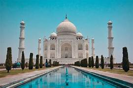
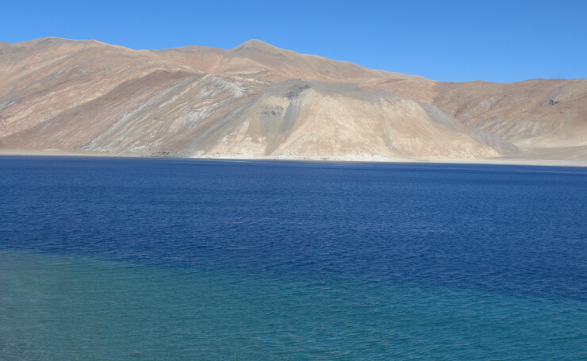
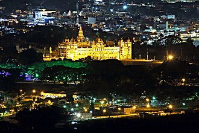
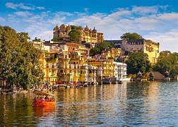

TAJ MAHAL
The Taj Mahal was commissioned by Shah Jahan in 1631, to be built in the memory of his wife Mumtaz Mahal,
IMPHAL
mphal is the third largest city in northeast India and the only city of Manipur. It has a rich history, a diverse culture, and a humid subtropical climate.

Jim Corbett National Park
India's first national park—Corbett Tiger Reserve., for endangered Bengal tigers, exotic bird species, and rich biodiversi

LADAKH
The land of high mountain passes, barren mountains, alpine lakes & meadows, enchanting valleys and ancient colourful Buddhist monasteries
MYSORE
Mysore is situated at the foothills of the Chamundi Hills. At an altitude of 770 m (2,530 ft) above mean sea level, the city of Mysore
UDAIPUR
, founded by Maharana Udai Singh II in 1559. It is known for its lakes, palaces, forts, museums, and festivals, and is often called the "Venice of the East".
